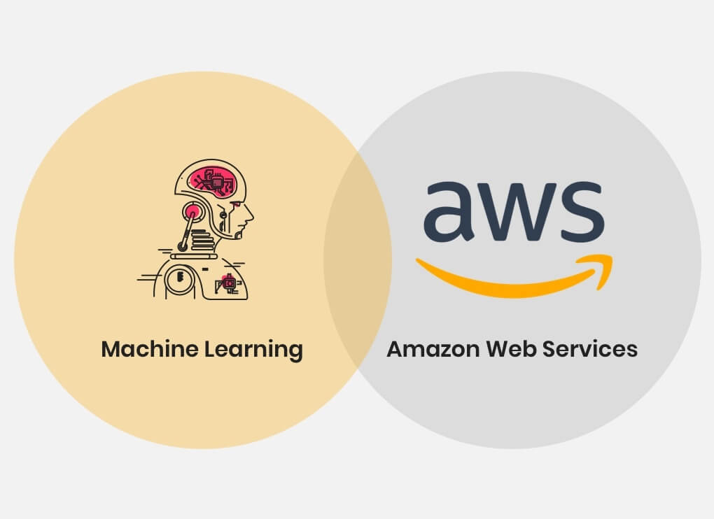

Empresas que utilizan la inteligencia artificial y el aprendizaje automático

-
- Apple: Debido a la gran cantidad de información que maneja la compañía tecnológica Apple, la organización hace uso del big data en la inteligencia artificial para asimilar el enorme volumen de localizaciones y mapas que generan los smartphones, los coches que se conectan a la nube u otros dispositivos.

Logos icónicos:. Recuperado de
- Facebook En la red social Facebook se genera diariamente un volumen de datos inabarcable para el trabajo manual. A partir del comportamiento de los usuarios en la aplicación, Facebook construye un grafo del que puede extraer inferencias para entender el comportamiento de los usuarios y posteriormente predecirlo.

Historia de Facebook:. Recuperado de
- Amazon: Los algoritmos de Amazon, construidos a partir de una ingente cantidad de datos, son capaces de dibujar las tendencias para dirigir al consumidor hacia el producto que está buscando y otros relacionados con el mismo.
 AmazonWebServices
- Nvidia: Nvidia es una de las empresas punteras en tecnología computacional y es líder en visualización computacional. Ofrece una unidad de procesamiento gráfico que utiliza el big data e inteligencia artificial para mejorar la gestión de la información de las empresas.
logo rtx 10 png. Recuperado de
- MicrosoftLa empresa tecnológica Microsoft también ofrece un servicio de soluciones a partir del uso de las técnicas de big data. La propia compañía ha puesto en marcha un programa que se dedica a gestionar datos en grandes cantidades; SQL Server 2017.
microsoft ireland logo. Recuperado de
- Oracle: La empresa Oracle hace uso del sistema Handoop para almacenar y procesar grandes volúmenes de información no estructurada. Este sistema contiene algunas aplicaciones satélites que permiten mejorar la funcionalidad y la seguridad de todo el proceso. Oracle, a partir del algoritmo MapReduce, es capaz de captar la información y estructurarla para que la gestión sea más eficiente.

Oracle Logo Recuperado de:
-